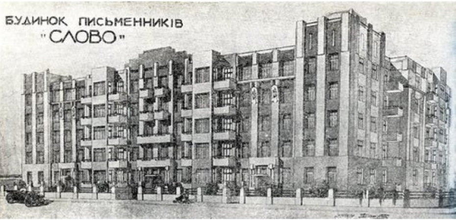

Що це?
Буди́нок «Сло́во» — житловий будинок у Харкові по вулиці Культури, 9 (перша адреса — вулиця Червоних Письменників, 5, після Д.С. війни — провулок Барачний, 9, потім — провулок Покровського, 9. Побудований наприкінці 1920-х років кооперативом літераторів. Заселений у 1930 році.
Передісторія. Побудова
Будівля, спроєктована Михайлом Дашкевичем у будівельному товаристві «Укрпайбуд» в архітектурних формах, що займають проміжне місце між модерном і конструктивізмом, має в плані символічну форму літери «С» (слов. «слово (літера)»).
Ідея забудови виникла у грудні 1926 року. До «ініціативної» групи з реалізації увійшли письменники — Ю. Войцехівський, А. Любченко, О. Слісаренко, П. Панч, С. Пилипенко та Остап Вишня. Спочатку будівництво планували закінчити восени 1928 р., але бракувало коштів. Після цього літератори звернулися по допомогу до голови РНК УРСР В. Я. Чубаря, за наказом якого було додатково виділено ще 51 тис. крб.
Всередині: високі стелі, великі вікна, під'їзди, крім звичайних, у двір, мали ще й парадні двері — назовні будинку (які завжди були забиті), а на даху містилися два солярії. Біля будинку, вище від літери «С» для культурного відпочинку письменників та їхніх дітей, було влаштовано невеличкий сквер із клумбою, дерев'яними садовими диванами, кущами бузку та каштанами. А за ним — спортивний майданчик з волейбольним полем та баскетбольними щитами. Навпроти внутрішнього двору — череда сарайчиків, щоб письменники мали де берегти свої речі. А для безпеки мешканців будинку будівельники побудували й бомбосховище.
Однак, як виявилось, — це була пастка радянської влади.
Репресії проти мешканців будинку
У травні 1933 року — з арештом мешканця будинку Михайла Ялового починається хвиля репресій проти діячів української культури, що згодом отримує назву Розстріляне відродження. Водночас, передчуваючи наближення тотального терору після арешту свого приятеля Ялового, інший мешканець будинку Микола Хвильовий вчиняє самогубство. Будинок «Слово» отримує недобру славу, незабаром Іван Багряний (арештований в 1932 році) називає його «Крематорій», згодом — рос. ДПЗ, дом предварительного заключения чи укр. БПУ, будинок попереднього ув'язнення. До 1938 року було репресовано мешканців сорока квартир із шістдесяти шістьох.
У деяких квартирах арешти відбувалися багаторазово. Багато кого розстріляно. Арештовували не лише членів кооперативу «Слово», у багатьох письменників із периферії час від часу виникали потреби відвідати столицю, тож, приїжджаючи до Харкова, вони зупинялися у друзів зі «Слова»
Сумним і трагічним прикладом є квартира № 54, господар якої Василь Вражливий відзначався надзвичайною гостинністю. Першим його заарештованим гостем був Іван Багряний. Це трапилося 16 квітня 1932 року (йому, однак вдалося уникнути смерті).
Згодом Василь Вражливий дав прихисток цілій родині: 1932 року з Польщі до Радянської України переїхала велика сім'я Антіна Крушельницького. Голову родини було арештовано разом із синами Тарасом та Іваном 6.11.1934 року. Вирок батьку — 10 років із конфіскацією майна. Відбувати покарання 56-річного в'язня повезли на Соловки. Там він збожеволів. Перегляд справи — розстріл. Страчений 23 жовтня 1937 року. Тараса та Івана 14 грудня 1934 року разом із Григорієм Косинкою, Олексою Влизьком, Костем Буревієм розстріляно в групі з двадцяти вісьмох людей у підвалах Київського Жовтневого палацу, який, після переїзду 1934 року столиці з Харкова, правив для НКВС за основну катівню
Двох інших синів, молодших, Богдана і Остапа, арештували трохи пізніше. Вони стали ЗК (рос. заключенный каналоармеец) Біломорбуду. Наступною заарештували доньку Антіна Крушельницького — Володимиру. Особливою трійкою УНКВС ЛО 25.11.1937 р. засуджена за ст. 58-10-11 КК РРФСР до вищої міри покарання. Розстріляна у Ленінграді 8.12.1937 р.
Самого ж хазяїна кв. 54 Василя Вражливого арештували 25 грудня 1934 р. Вирок — 10 років концтаборів. Перегляд справи — розстріл. Страчений 8 грудня 1937 р.